stam/js/stam.custom-select.js 로 단일화했습니다. 각 board JS는 prefix·selector·CSS class·flip container 만
config 로 전달하고 init/closeAll 만 호출합니다. 신규 동작·기능 추가 없음. 저장값/native select dispatch/CSS 토큰 모두 보존.
| 구분 | 파일 | 변경 |
|---|---|---|
| 신규 공통 JS | stam/js/stam.custom-select.js | +222 — STAM.customSelect.init / closeAll |
| 제품 JS | stam/js/stam.requirements.js | buildRq* / closeRq* 제거 → init(cfg) 호출 |
| 제품 JS | stam/js/stam.menu-screen-list.js | buildMsl* / closeMsl* 제거 → init(cfg) 호출 |
| 제품 JS | stam/js/stam.functional-specification.js | buildFn* / closeFn* 제거 → init(cfg) 호출 |
| HTML | stam/pages/boards/requirements.html | <script src="stam.custom-select.js"> 추가 (board JS 앞) |
| HTML | stam/pages/boards/menu-screen-list.html | 동일 |
| HTML | stam/pages/boards/functional-specification.html | 동일 |
| 역할 | rq (이전) | msl (이전) | fn (이전) | SSOT |
|---|---|---|---|---|
| build | buildRqCustomSelect | buildMslCustomSelect | buildFnCustomSelect | STAM.customSelect.init 내부 build |
| close single | closeRqCustomSelect | closeMslCustomSelect | closeFnCustomSelect | 내부 closeWrap |
| close all | closeAllRqCustomSelects | closeAllMslCustomSelects | closeAllFnCustomSelects | STAM.customSelect.closeAll |
| enhance drawer | enhanceRqDrawerSelects | enhanceMslDrawerSelects | enhanceFnDrawerSelects | STAM.customSelect.init(drawer,cfg) 호출 wrapper |
window.STAM.customSelect = {
init(root, config), // root 안의 cfg.selectSelector 매칭 native <select> 를 custom select 로 enhance
closeAll(root, config) // root 안의 cfg.openSelector 매칭 wrapper 닫기
};
// config (board별 다르게 주입)
{
selectSelector, nativeMarkerAttr, uidPrefix,
wrapClass, triggerClass, valClass, caretClass,
panelClass, optClass, checkClass, otextClass, nativeClass,
flipContainer,
openClass, // 예: 'open' (rq/msl) | 'open is-open' (fn)
upClass, // 예: 'cs-up' (rq/msl) | 'cs-up is-up' (fn)
openSelector // 예: '.rq-cs.open'
}
| 항목 | rq | msl | fn |
|---|---|---|---|
| selectSelector | select.rq-inp | select.msl-inp | select.fn-sel |
| nativeMarkerAttr | data-rq-cs | data-msl-cs | data-fn-cs |
| wrapClass | rq-cs | msl-cs | fn-cs stam-cs |
| triggerClass | rq-cs-trigger | msl-cs-trigger | fn-cs-trigger stam-cs-trigger |
| panelClass | rq-cs-panel | msl-cs-panel | fn-cs-panel stam-cs-menu |
| optClass | rq-cs-opt | msl-cs-opt | fn-cs-opt stam-cs-opt |
| flipContainer | .rq-dw-body | .msl-dw-body | .fn-dw-body |
| openClass | open | open | open is-open |
| upClass | cs-up | cs-up | cs-up is-up |
#rq-reg-btn / #msl-reg-btn / #fn-reg-btn 클릭 → board JS openDrawer() →
내부 STAM.customSelect.init(drawer, cfg) 호출. 수정은 [data-rq-open="edit"] / msl / fn 동일.
custom select trigger 도 실제 DOM .click() 으로 호출하여 board JS 의 click handler 가 동작합니다.
| case | rq (1366 / 1920) | msl (1366 / 1920) | fn (1366 / 1920) |
|---|---|---|---|
| 등록 drawer open (real button) → trigger click → openCount | 1 / 1 | 1 / 1 | 1 / 1 |
| 등록 option click → label 반영 + 패널 닫힘 (openCount=0) | PASS (label='기능') | PASS (label='FO') | PASS (label='조회') |
| 외부 클릭 닫힘 (before=1 → after=0) | PASS | PASS | PASS |
| ESC 닫힘 (before=1 → after=0) | PASS | PASS | PASS |
| 수정 drawer open (real button) → trigger click → openCount | 1 / 1 | 1 / 1 | 1 / 1 |
| 중복 init / 재오픈 가드 — close → re-open → trigger click → openCount | 1 / 1 | 1 / 1 | 1 / 1 |
| 재오픈 시 drawer 내 trigger 개수 (native select N=4) | 4 / 4 | 4 / 4 | 4 / 4 |
| 재오픈 시 drawer 내 .{prefix}-cs wrap 개수 (중복 wrap 없음) | 4 / 4 | 4 / 4 | 4 / 4 |
| console error | 0 | 0 | 0 |
STAM.customSelect.init 을 다시 호출하지만,
공통 모듈은 native select 의 cfg.nativeMarkerAttr (예: data-rq-cs="1") 를 확인하여 이미 enhance 된 native 는
build 를 skip 합니다. 결과: 재오픈 시 wrap 개수가 native select 개수와 동일 (각 게시판 drawer 내 native N=4 → wrap=4),
trigger 도 4개 (중복 바인딩 없음). trigger click 시 열린 select 개수 = 1 (정확히 하나만 열림).
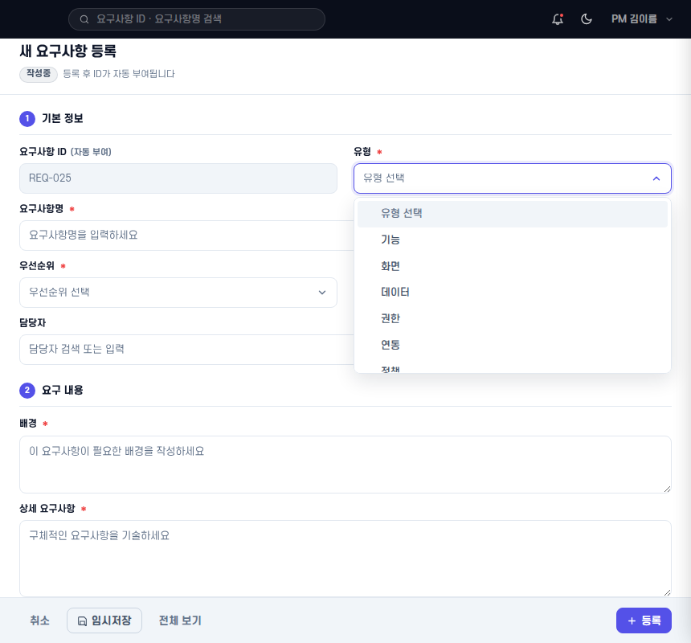
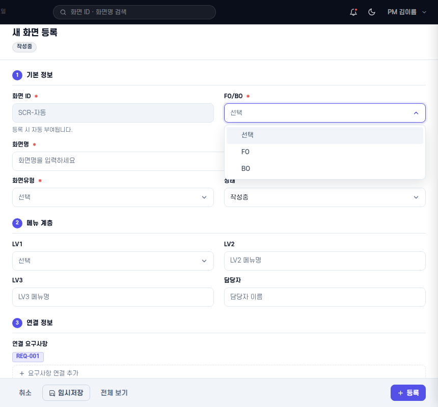
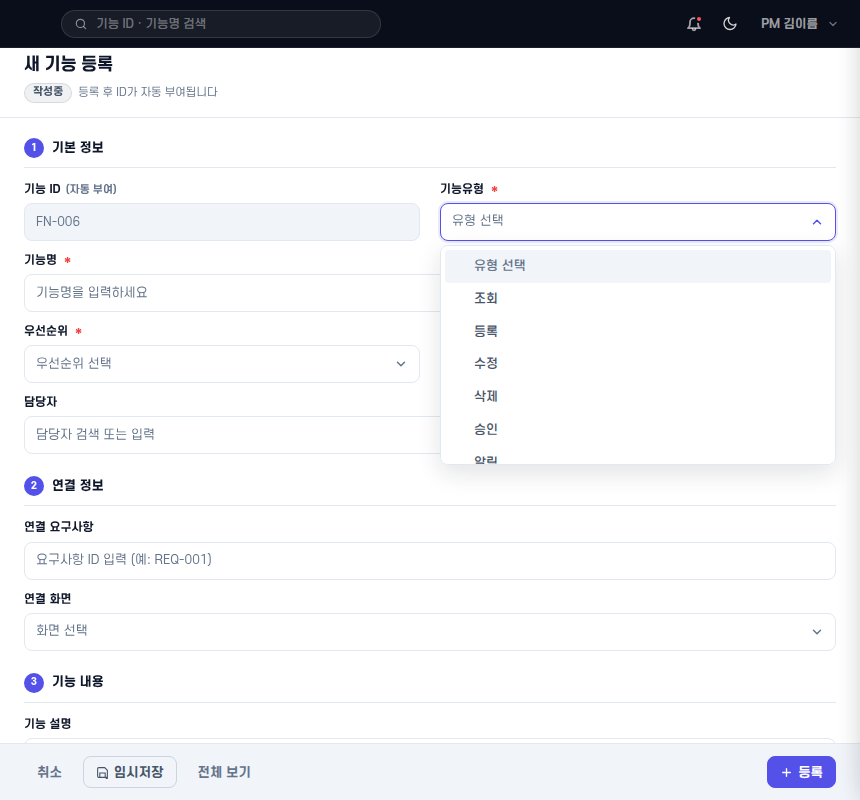
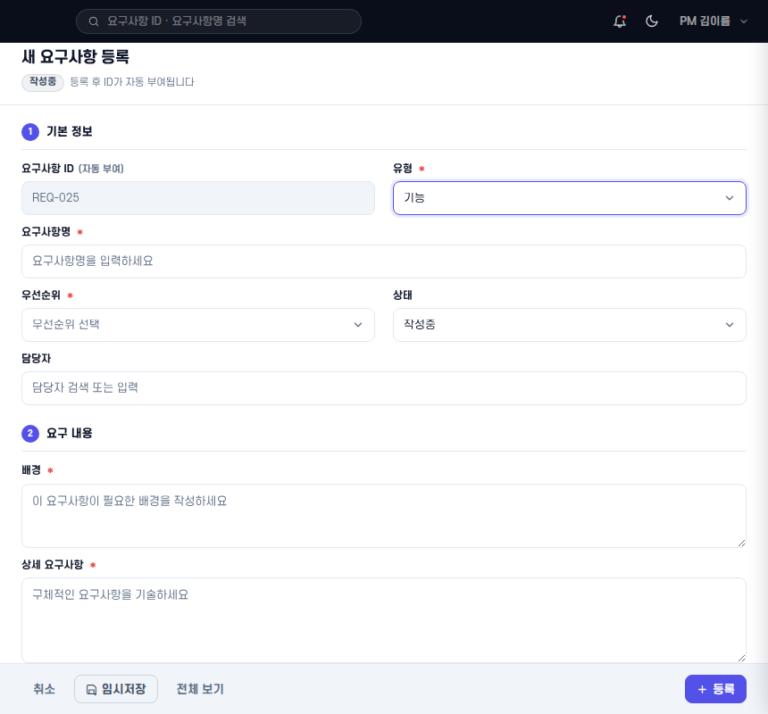
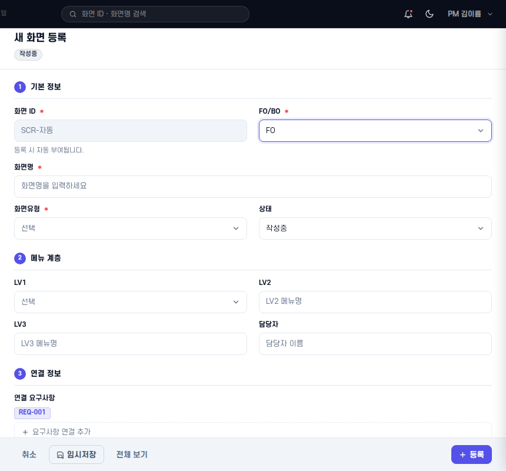
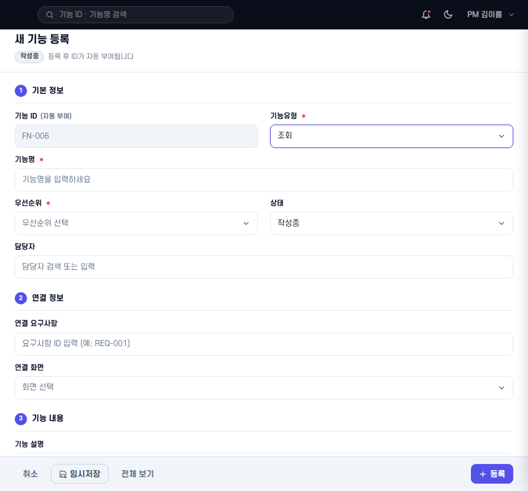
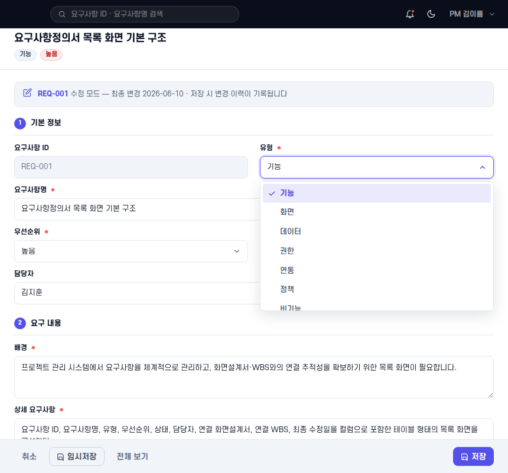
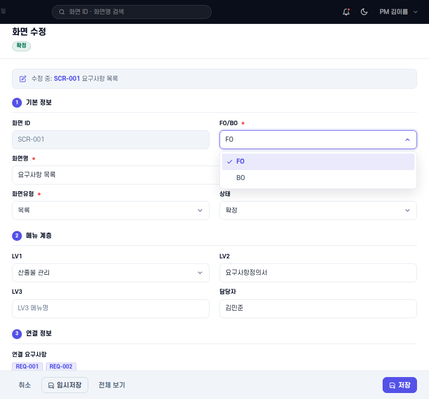
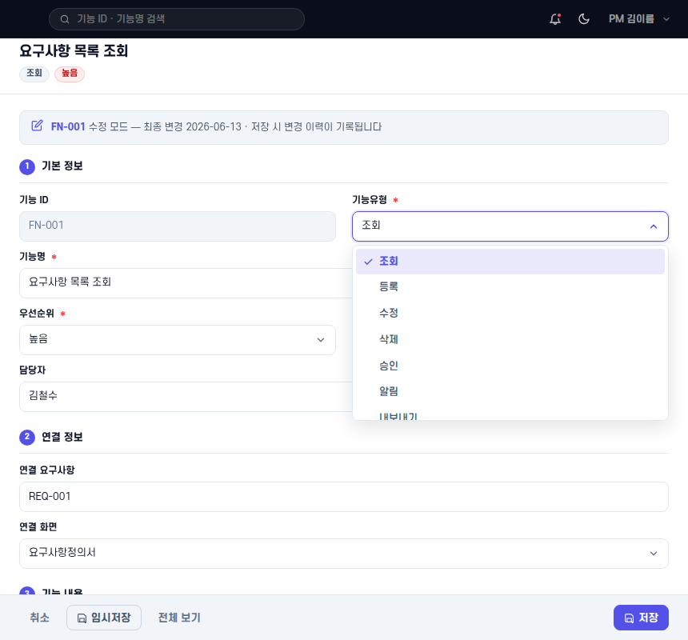
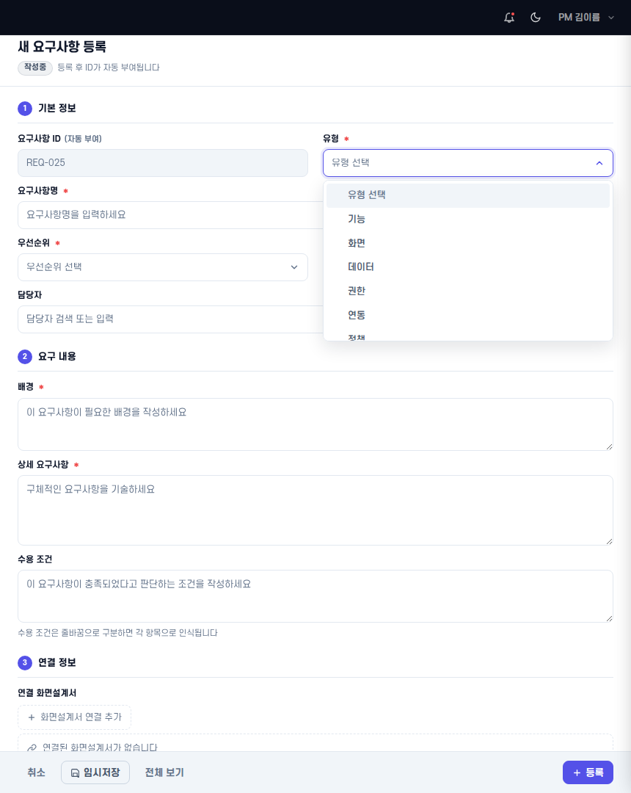
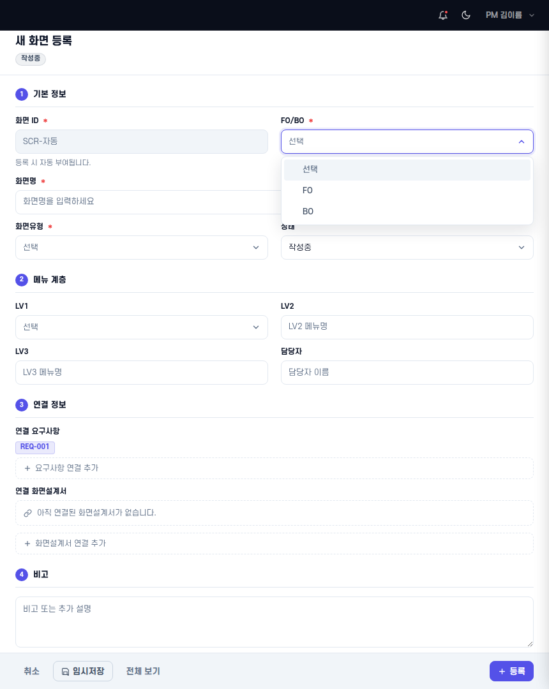
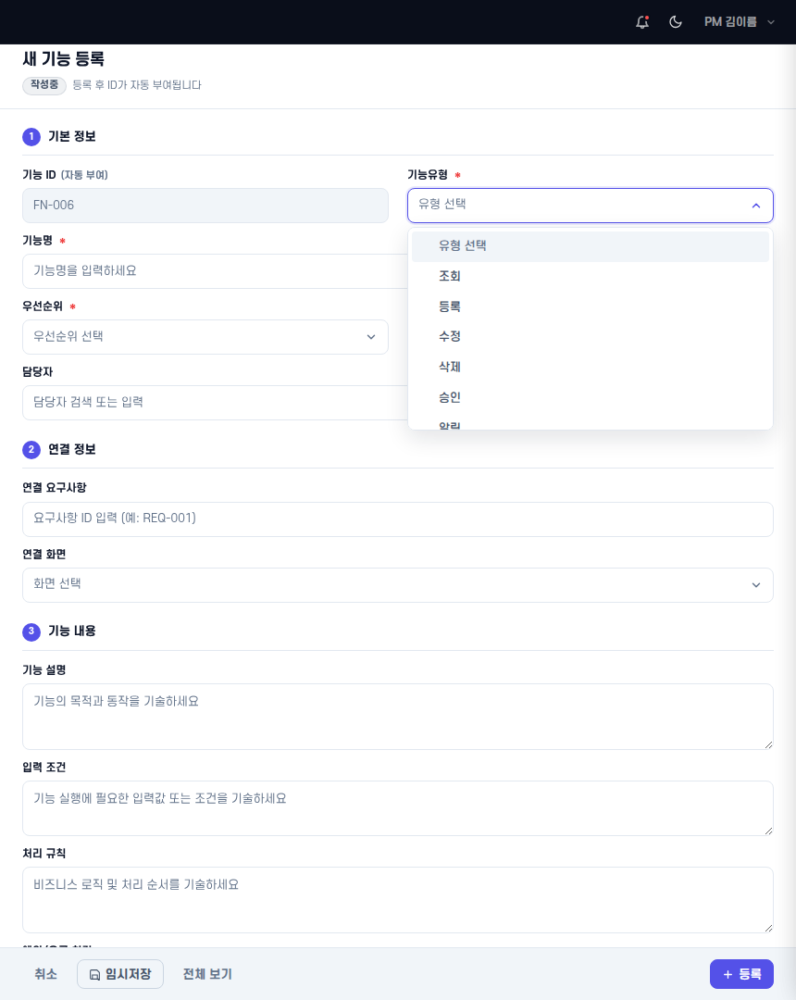
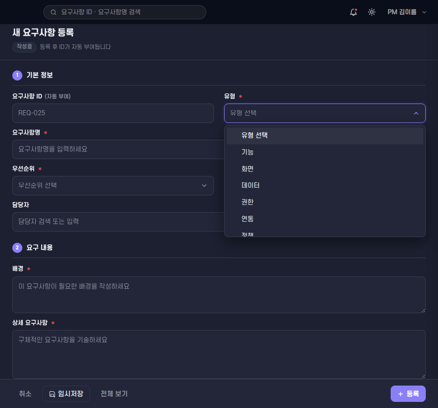
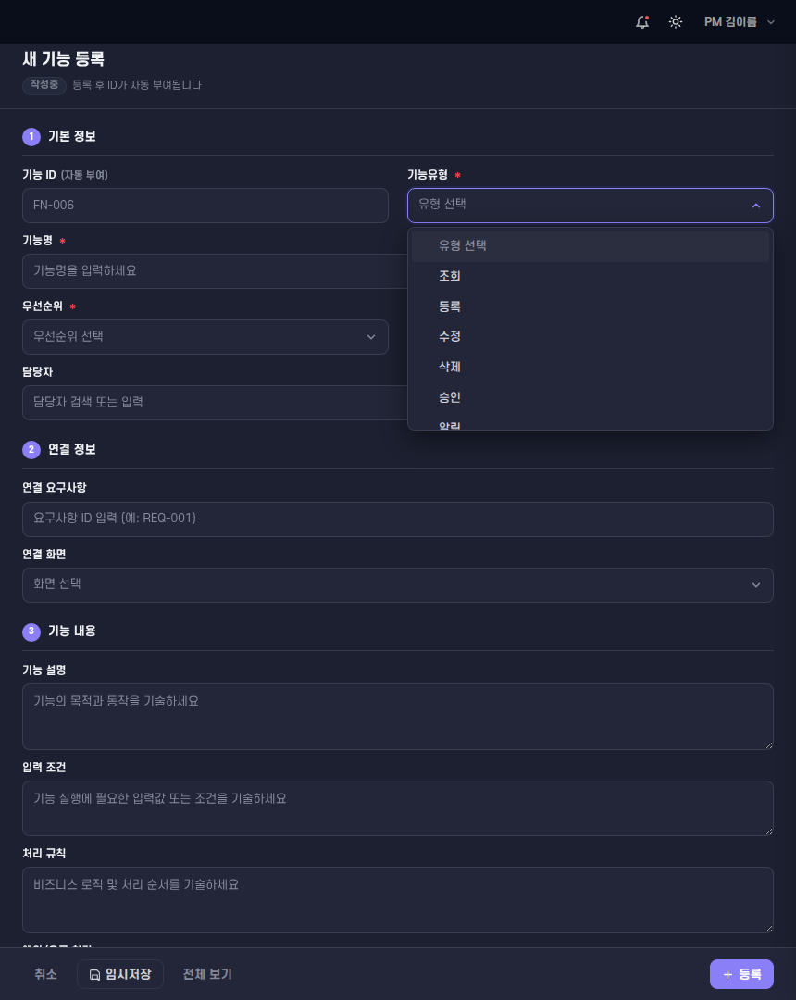
| 항목 | 결과 |
|---|---|
stam/pages/boards/wbs.html / stam.wbs.js / stam.wbs.css 미변경 | PASS |
stam/pages/boards/screen-specification.html / stam.screen-specification.js / .css 미변경 | PASS |
stam.board-filter.js / stam.board-filter.css 미변경 | PASS |
stam.nav-data.js / stam.shell.js / stam.topbar-render.js 미변경 | PASS |
firebase.json / .github/workflows/* 미변경 | PASS |
| Board Factory 신규 구현 없음 | PASS |
| Drawer Footer 재수정 없음 (CSS / HTML drawer-foot 영역 미변경) | PASS |
| save/delete/API/localStorage/Firestore 로직 변경 없음 | PASS |